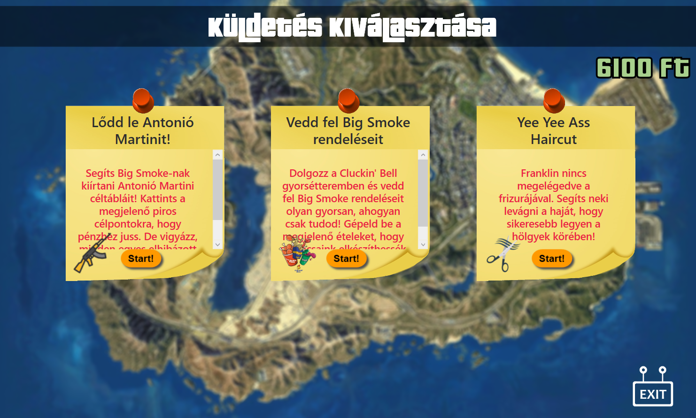
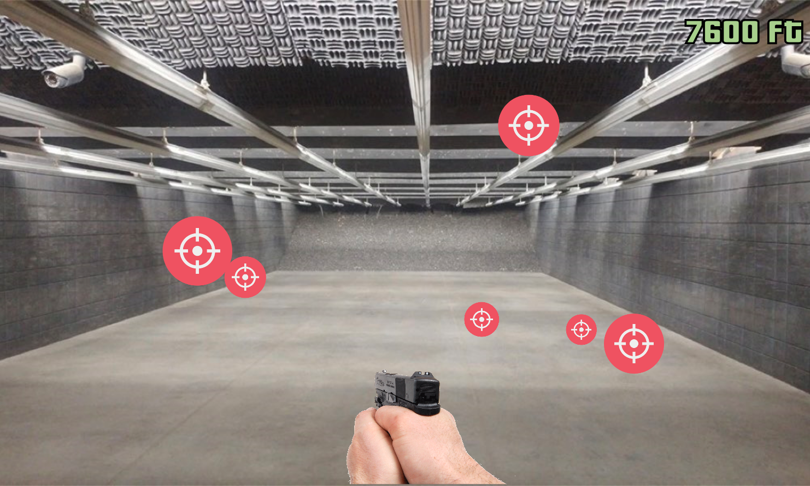
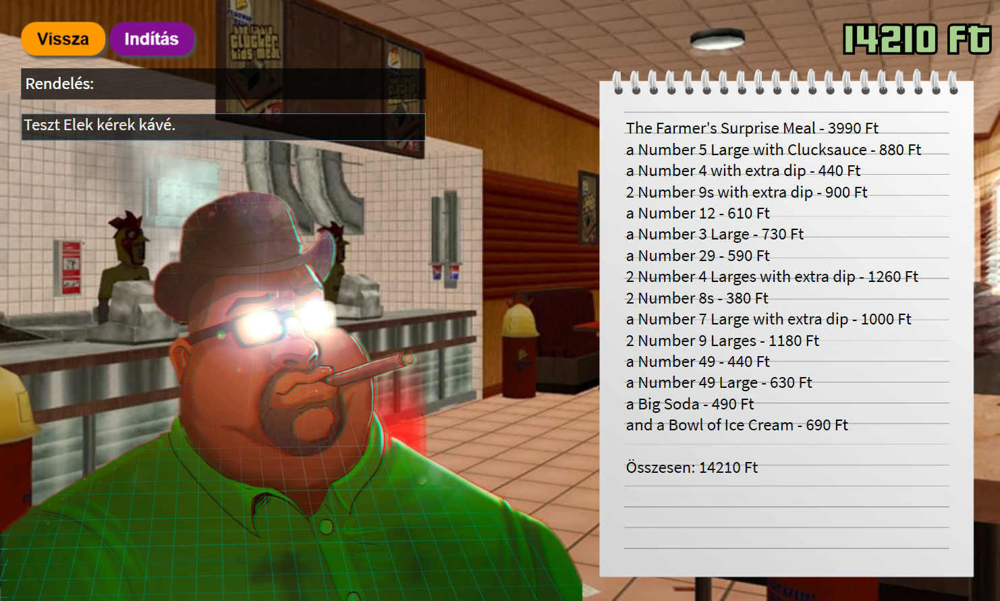
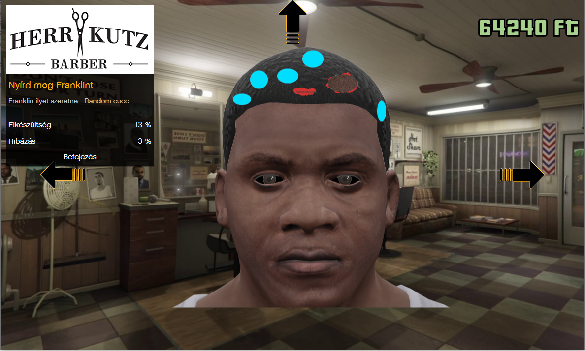
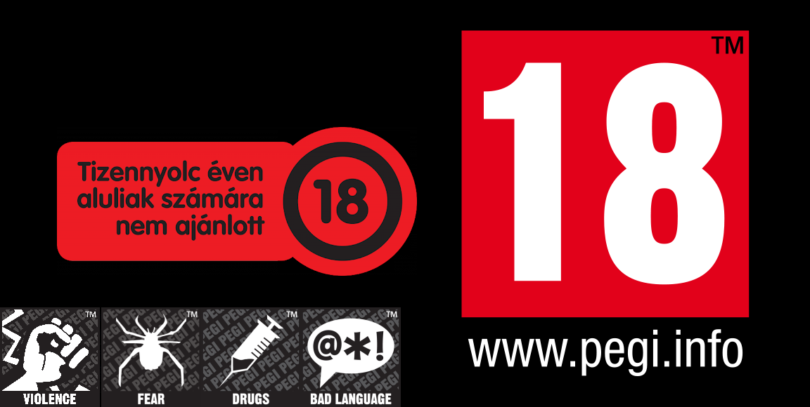

bejelentkezéssel!
bejelentkezéssel!

Egy játék mindenreCsapatunk egy olyan korszerű játék elkészítésére törekedett, ami mellett nem hiányozna semmi más. Anti-Social Clubban beszélgethetsz a barátaiddal, valamint több különböző játékmód közül válogathatsz kedved szerint. Több percnyi erőfeszítés után az Insignificancy bátran mutatja be legújabb mesterművét, a Grand Theft Autó 6-ot. (Nem keverendő össze a kis játéksorozattól, a Grand Theft Auto-tól, aminek ki se jött a hatodik verziója... amatőrök.) |
|

|
Teljesen randomEnnek a szuperszónikus játéknak a legnagyobb erénye, hogy minden véletlen szerűen történik. A sorsod kizárólag a szerencsére, nameg persze a géped teljesítményére van bízva. Három + 1 küldetésen keresztül tudod próbára tenni randombírási képességedet. És, hogy miért a +1? Tudod nálunk a TÖLTŐKÉPERNYŐ is egy küldetés, mert RANDOM! Gondolkodtál már azon, hogy miért töltenek olyan sokáig a játékok? Egyáltalán mi szükség van töltésre? Nem elég egyet kattintani, aztán már megy is az egész? Hát dehogyis nem. Az igazság az, hogy a szoftverfejlesztők imádják húzni az emberek idegeit, ezért tesznek be töltőképernyőket. A legtöbb játékban igazából a háttérben az ég világon semmi nem történik. Viszont nálunk minnél hosszabb ideig tart a töltés, annál több pénzzel fogunk a tettek mezejére bocsájtani. A játék 16 különböző háttér és előtér grafikát biztosít. Érdemes akár órákig is várni az értékes nyereményekre! Ugye milyen szuper? |

FelhasználókezelésAz Anti-Social Club-nak köszönhetően akármennyi felhasználót létre tudsz hozni. Ha egy népes családban élsz és többen nyomjátok ugyan azon a gépen nem kell aggódnod. Kizárt, hogy a nénikéd lenulláza a mentésedet! Mindenki külön felhasználónévvel, sőt igény szerint akár jelszóval is létre hozhatja a fiókját. Ha elírás történt az sem gond. Bármelyik adatodat, bármikor, bárhogyan, bárkivel (akár random is) tudod módosítani, törölni vagy újratelepíteni. Na jó..., azért utóbbi csak vicc volt. Most komolyan mit telepítünk újra, a Windows-t? Ne röhögtess! |
|
|  |
KüldetésekA GTA6 fergetegesen sok küldetést tartalmaz. Ahhoz, hogy a legendary töltőképernyőt láthassad mindegyiket randomszor kell végigvinned! Vigyázz a pénzedre! Hamar elfogy, ha nem vagy elég óvatos. Antonió Martini, a hírhedt bandita mindenhol ott van. Olyan, mint a porszívó, mindent elszipkáz egy pillanat alatt. Big Smoke, az öreg pajtás. Mindenki szereti, nem csak nagy hasa, de mégnagyobb füstössége miatt. Utolsó főszereplőnk Frankin, akitől torzomborz haja miatt mindenki elmenekül. De főleg a Nők. |

MISSION 1 - Lődd le Antonió Martinit!Segíts Big Smoke-nak kiírtani Antonió Martini céltábláit! Kattints a megjelenő piros célpontokra, hogy pénzhez juss. De vigyázz, minden egyes elhibázott találat után 1500Ft-ot levonunk! |
|  |
MISSION 2 - Vedd fel Big Smoke rendeléseit!Dolgozz a Cluckin' Bell gyorsétteremben és vedd fel Big Smoke rendeléseit olyan gyorsan, ahogyan csak tudod! Gépeld be a megjelenő ételeket, hogy szakácsaink elkészíthessék a fogásokat! |

MISSION 3 - Yee Yee Ass HaircutFranklin nincs megelégedve a frizurájával. Segíts neki levágni a haját, hogy sikeresebb legyen a hölgyek körében! |
|  |
FIGYELEM!A GTA 6 NEVEZETŰ ERŐSZAKOS JÁTÉK 18 ÉVEN ALULIAK SZÁMÁRA SZÜLŐI ENGEDÉLLYEL SEM AJÁNLOTT! JÁTSZANI KIZÁRÓLAG SAJÁT FELELŐSÉGGEL!!! A játék használata szabályzathoz kötött. Az ÁSZF §12.4/B1 pontjának elfogadása kötelező. |